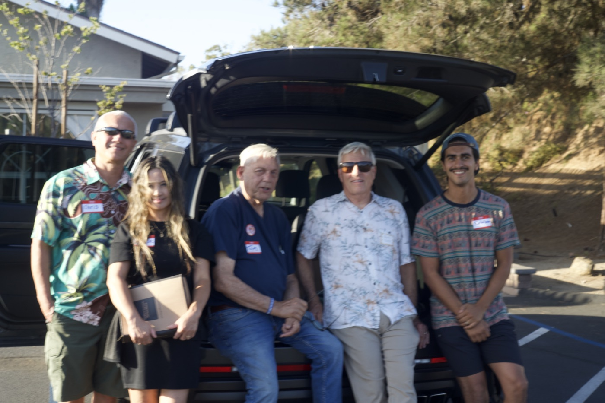
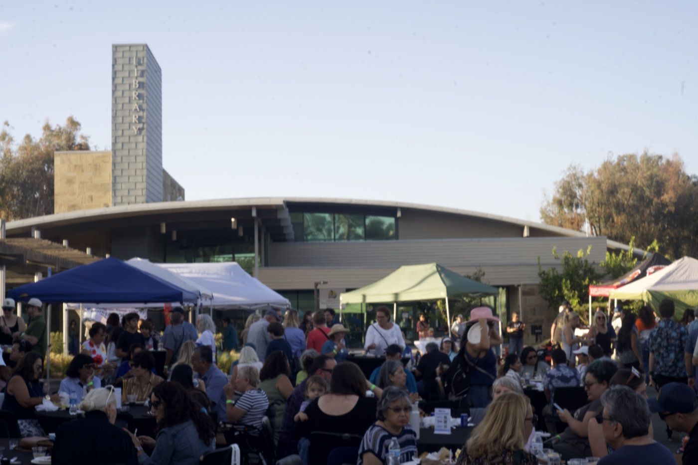
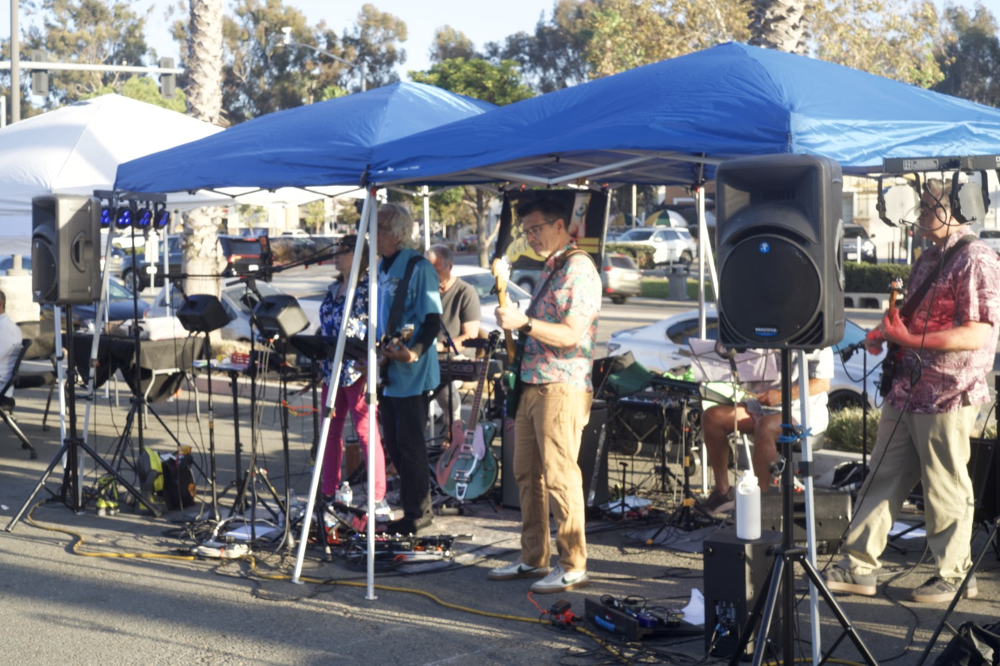
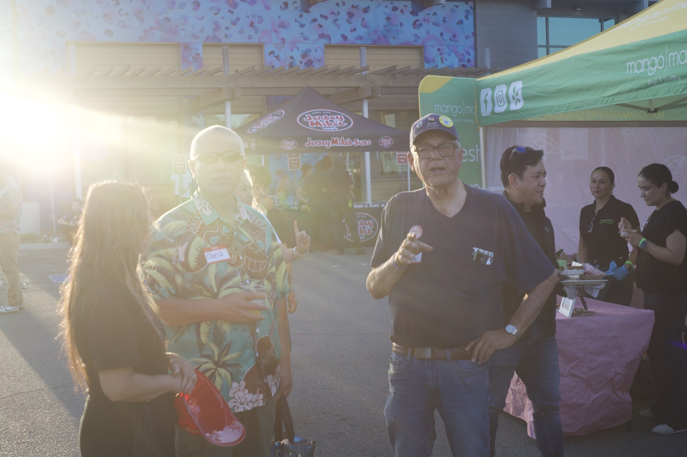
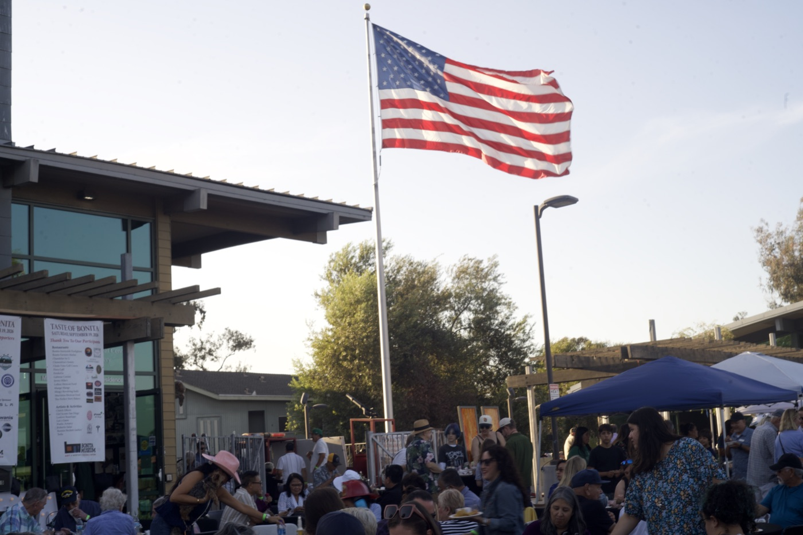
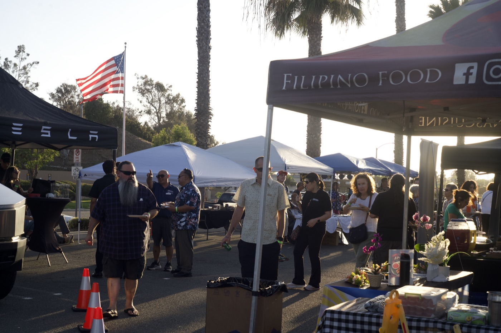
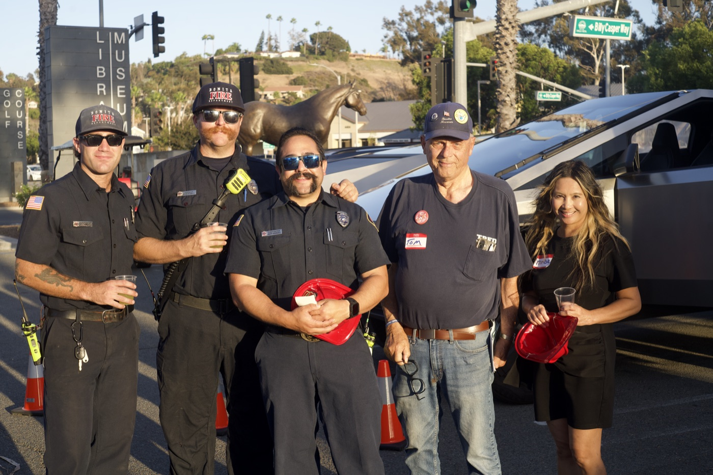
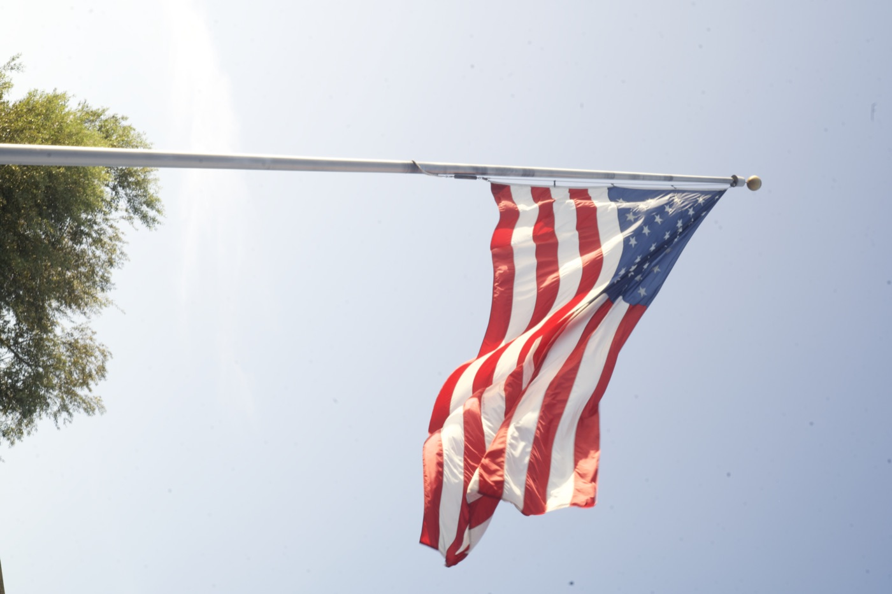

Coming up
Upcoming events
Family Bible Study & Prayer
Wednesday, August 26, 2026 · Rohr Park, Gate A
Feast Day Fellowship Meal
Sunday, August 31, 2026 · Bonita OPC, after the morning service
Recently
Taste of Bonita Outreach
Saturday, September 19, 2026 · Bonita Museum & Cultural Center
Church Workday
Saturday, August 22, 2026 · Bonita OPC
Family Bible Study & Prayer
Wednesday, August 19, 2026 · Rohr Park, Gate A
Family Bible Study & Prayer
Wednesday, August 12, 2026 · Rohr Park, Gate A
Every week
Our rhythm
Sunday
Morning Worship — 11:00 a.m.
Evening Worship — 6:00 p.m.
Wednesday
Family Bible Study & Prayer, 6:00–8:00 p.m. at Rohr Park, Gate A. confirm
Second Tuesday
Trustees Meeting — monthly
Deacons Meeting — every other month
Prayer requests
To add something to the weekly prayer sheet, contact Mr. McMorris by text on 1 (619) 602-4999, or reach the church office at (619) 475-3752. confirm
News
From the bulletin
Week of August 23, 2026
Communion and Feast Day next Sunday
Next Sunday we come to the Lord’s Table, and afterwards share a meal together. A sign-up sheet for dishes is on the back table.
Week of August 16, 2026
Church workday
The congregation gathered at the church on Saturday, August 22 to work on the grounds and building.
Ongoing
Services streamed each Lord’s Day
If you cannot be with us in person, both services are streamed live on our YouTube channel.
Outreach · September 19, 2026
Taste of Bonita
Once a year the community gathers a few blocks away at the Bonita Museum & Cultural Center for food, music, and neighbors — and our church sets up a table. A few of our people, out where the community already is.







